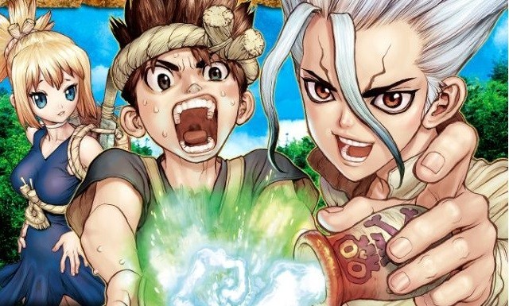

松尾の趣味ページ
「Dr.STONE」

突如発生した謎の現象により全人類とツバメが石化、それから約3700年後に目覚めた現代の高校生、石神千空らが喪失した科学文明を取り戻し、石化の謎を解いていくサイエンス&サバイバルアドベンチャー。火起こし、狩猟から衣服を作り食糧を調達するという原始的生活基盤の確保から始まり、精密機器に欠かせない金属の確保、医療および調理技術の発達、移動手段の進歩に紡績から服飾、金銭の流通に高度な通信手段の入手、武器開発…これら全ての要素をゼロから作り上げる科学漫画
「balencaga」
婦人服を中心に、靴・バッグなどのレザーグッズ、宝飾品・時計、香水・ボディローションなどの商品を展開している。非対称な5角形の断面をもつ香水ボトルや、スタッズ装飾のあるバッグ・財布などがブランドアイコンとされる。 5番街、パリ16区、カプリ島等を股にかけたソーシャライトのモナ・フォン・ビスマルク（英語版）が上顧客で知られ、現在のデザインにもインスピレーションを与えている。シャネル・クロエなどと並び、ハリウッド女優のスナップ写真でよく見かけられるブランドのひとつである
リンク